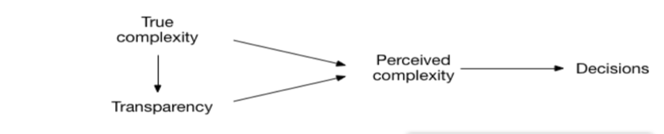
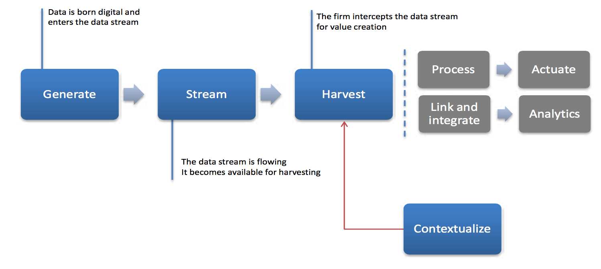
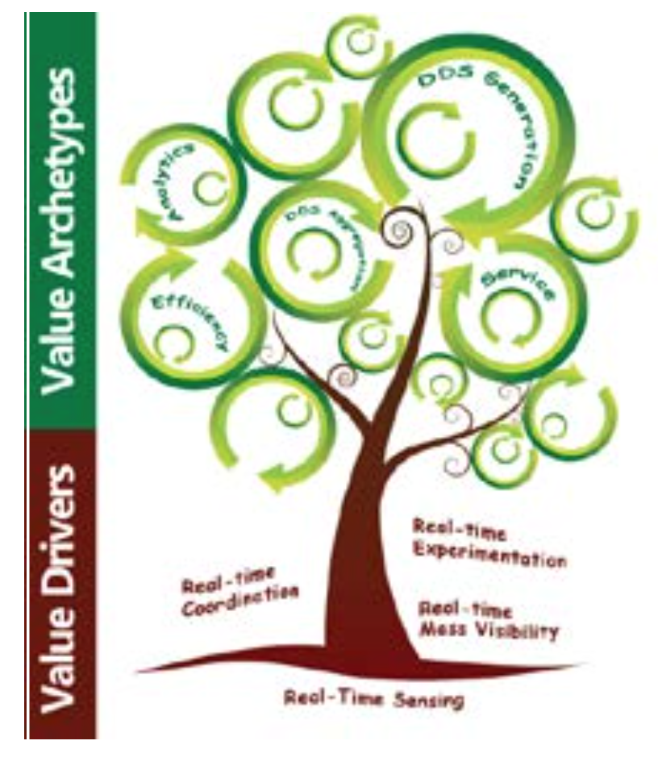

A Digital Data Stream (DDS) is the continuous digital encoding and transmission of data describing a related class of events. Examples abound, from Tweets and Instagrams, to the geolocation of merchant ships or the movement of soccer players on the pitch. The Internet of Things is impelling an acceleration of the proliferation of DDS with sensors increasingly embedded in cars, personal devices, and infrastructure.
We see digital data streaming as the newest evolution of computing - from batch and online processing of transactions to the continuous processing of streaming data. As with any historical shift, the opportunities for value creation are endless, and research must contribute to our understanding of the phenomenon.
The mission of the DDS Lab is to be at the forefront of knowledge and understanding of DDS - from their generation and processing to their productive and strategic use.
Marchesani D., Piccoli G., Lui T.W. (forthcoming). The Impact of IT-enabled Customer Experience Management on Service Perceptions and Performance. Information and Communication Technologies in Tourism 2017. Springer International Publishing. Publication PDF link
Piccoli, G., Lui, I., Gruen, B. (forthcoming). The Impact of IT-enabled Customer Service Systems on Service Personalization, Customer Service Perceptions, and Hotel Performance. Tourism Management.Publication PDF link
Year 2016
Piccoli, G. (forthcoming). Triggered Essential Reviewing: The Effect of Technology Affordances on Service Experience Evaluations. European Journal of Information Systems.
Piccoli, G., Pigni F. (forthcoming). TRIPBAM: Leveraging Digital Data Streams to Unleash Savings. Communications of the Association for Information Systems.
Palese B., Piccoli G. (2016). Online Reviews as a Measure of Service Quality. Pre-ICIS SIGDSA/IFIP WG8.3 Symposium, Dublin, Ireland, December 11, 2016. Publication PDF link
Bonaretti D., Piccoli G., Bartosiak M. (2016). The Impact of IT-enabled Customer Experience Management on Service Perceptions and Performance. Proceedings of the Fifteenth Annual Pre-ICIS Workshop on HCI Research in MIS, Dublin, Ireland, December 11, 2016. Publication PDF link
Ives, B., Palese, B., Rodriguez, J.A. (2016). Digital Data Streams for Customer Service Enhancement: Harnessing the Internet of Things. MISQ Executive, 15(4).
Piccoli, G., Pigni, F. and Watson, R. (2016). Digital Data Streaming: What We Know and Where We Are Going. MISQ Executive, 15(4).
Piccoli, G., Bartosiak, M. (2016). Presentation Format and Online Reviews Persuasiveness: The Effect of Computer Synthesized Speech. Thirty Seventh International Conference on Information Systems, Dublin, Ireland, 2016. Publication PDF link
Pigni, F., Piccoli, G., Watson, R. (2016). Digital Data Streams: Creating value from the real-time flow of big data. California Management Review. 58(3), 5-25.Publication PDF link
Palese, B., Piccoli, G. (2016). Online Reviews as a Measure of Service Quality. Baylor University - Big XII+ MIS Research Symposium.Publication PDF link
Year 2015
Applegate, L.M., Piccoli, G., Pigni, F. (2015, August). Duetto: Industry Transformation with Big Data. Harvard Business School, No. 9-806-105. Boston, MA: Harvard Business School Publishing.
Bartosiak, M. L., Piccoli, G. (2015, May). Tell Me What to Do! Computer-Synthesized Speech as a Persuasive Technology in the Context of Online Reviews. In Proceeding of Twenty-First Americas Conference on Information Systems (AMCIS) , Puerto Rico. Publication PDF link
Piccoli, G., Pigni, F. (2015). Selecting Digital Data Stream Winners. In SIM Advanced Practices Council. Publication PDF link
Piccoli, G., Rodriguez, J., Watson, R. T. (2015, January). Leveraging Digital Data Streams: The Development and Validation of a Business Confidence Index. In System Sciences (HICSS), 2015 48th Hawaii International Conference on (pp. 928-937). IEEE. Publication PDF link
Noce, L., Zamberletti, A., Gallo, I., Piccoli, G., Rodriguez, J. A. (2014). Automatic Prediction of Future Business Conditions. In Advances in Natural Language Processing (pp. 371-383). Springer International Publishing. Publication PDF link
Year 2013
Piccoli, G., Pigni, F. (2013). Harvesting external data: the potential of digital data streams. MIS Quarterly Executive , 12(1), 143-154. Publication PDF link
Year 2008
Piccoli, G., Watson, R. T. (2008). Profit from customer data by identifying strategic opportunities and adopting the ‘Born Digital’approach. MIS Quarterly Executive, 7(3), 113-122. Publication PDF link
Alexa, Ehi Siri, Ok Google, Cortana. Conversational interfaces are becoming pervasive as the technology is now being bundled in products and services we use in our daily lives (e.g. Phones, PCs, and Apps). However, the mimic of real human chatting is not constrained to voice assistants. In fact, messaging apps are rapidly becoming platforms through which users can access numerous services (e.g. Uber, Louis Vuitton). Leading messaging apps platforms are WeChat, Messenger, Telegram, and Slack.
Conversational interfaces in many ways resemble the shift we experienced with the WWW. It is foreseeable a future where information and digital services will be accessible through conversational interfaces.
We are currently developing both vocal and chat interfaces with the objective of researching how and to what degree they will impact businesses. Our main interests are in the education and hospitality sectors.
Our goal is to develop taxonomies and frameworks in order to answer questions such as: What is happening today with Conversational Interfaces? What are possible short- and long-term evolutions? What are the optimal designs for CI in each space (e.g., B2C, B2E, B2M)? What could be the first use cases? Which lessons to be learned from early trials? How should your firm position itself for the impending CI revolution?
The current personalization system “My Page” developed by Hoxell empowers travelers to personalize their stay prior to their visit to a hotel. The system offers the possibility to select personalized items and is aimed at delivering a quality customer experience. It was designed for desktop interfaces and most users left the personalization unfinished or delayed the desired actions. As most of the targeted users use mobile devices, the current system is limited and missed the opportunity of this growing user-base. In this project, we are interested in maximizing the number of completed personalizations made by travelers prior to their visit at the hotel.
We will develop an application specifically for mobile devices to increase the number of personalizations made by travelers. The approach for building the application is based on the foundations of design-science. The application undergoes continuous evaluation and is tested empirically for new insights and discovery.
Over the past decade, the spread of information has made it increasingly difficult for hotels to provide undifferentiated products and to sustain premium prices. However, this also gave most guest-centric firms the opportunity to shape the customer experience in new ways. To do so, they have to succeed in integration and the Customer Experience Management, which requires a system designed with mobility in mind.
The study wants to describe a case study of seven Swiss hotels which adopted a Customer Experience Information System to face these challenges, thus leveraging on technology to support internal efficiency and the improvement of the relationship with guests.
A mixed-methods research is conducted, merging inquiry techniques with statistical regression methods to finally capture the different effects of the information system usage on more facets of the firms’ performance. Specifically, effects are investigated via event study, partial least squares modeling, and generalized estimated equations on transactional data and online reviews.
The goal is to show how the efficiency in housekeeping tasks and the percentage of experiences’ virtualizations increase with the introduction of the CEM system.
The digitization of everything is increasing in pervasiveness. In fact, by 2020 experts estimate that 20.8 bilion smart devices will be connected to the Internet. Home appliances, vehicles, thermostats, and dishwashers will be regularly equipped with sensors, computational capabilities, and network connectivity that will enable them to make decisions based on the data they have collected. Differently from smartphone apps or social media, these devices produce and use digital data without any human intervention.
The Internet of Things (IoT) is the network of physical objects embedded with electronics, software, sensors, and network connectivity, that enables these objects to collect and exchange data.
In this research, we investigate how companies can leverage the opportunities that the IoT creates in order to increase customer willingness to pay by offering value previously unfeasible.
We investigate the potential of the IoT through a ground based theory. In fact, we have analyzed and classified more than 200 IoT initiatives into existing frameworks in order to get insights about how companies are creating value.
We delineate three frameworks in order to help managers envision how IoT can impact their organizations.
Preliminary analysis demonstrates how IoT initiatives can impact all stages of the customer service lifecycle. This preliminary results suggest that IoT can create value for customers through broad and diversified applications.
Algorithms are penetrating every part of our life, with significant positive effects. For example, people could make more informed and more accurate decisions based on algorithms predictions. As algorithms become more and more complex, we argue that they become less transparent. As algorithmic transparency decreases, using them in everyday decision creates fertile grounds for unintended consequences.
The goal of the project is to operationalize the construct “Algorithmic Transparency” and determine its effect on trust and decision to use an algorithm. Also, “Data Transparency” and “Algorithmic Complexity” (true complexity and perceived complexity) constructs will be proposed to test their relationship with “Algorithmic Transparency”.
1) Proposed research method: thorough literature review in many areas to extract relevant items from the construct domain; exploratory and confirmatory factor analysis involving many items (variables) to be included (or excluded as non-relevant) in the final construct scale. A second order scale is possible.
2) Testing the construct in the nomological network: determining the effect of the levels of transparency on trust and decision to use an algorithm. Additionally, one of the possible outcomes could be determining optimal level of transparency (and conditions for it) when maximum trust is created without overloading the customer with too much information. Interaction with the algorithm complexity is also expected.
Proposed Model:

3) Identifying possible moderators that could affect the proposed model path coefficients.
Literature explains the reasons to read online reviews and how these reviews influence readers’ buying/booking decisions. Yet, it fails to explain the mechanisms behind these processes. Thus, we need a deeper understanding of the mechanisms and heuristics applied by individuals when making a decision based on online reviews. We want to understand how individuals use online reviews to make decisions and why they use the mechanisms that they employ to make a decision.
The study is divided into two phases. First, we use observation to see how individuals use online reviews to choose products online. Participants are asked to imagine that they are going for a short stay to city X and to use online review providers to find a hotel in which they will stay. They say aloud what they do and all their actions are recorded. After they perform the task, they are asked to explain their behaviors and decision in a semi-structured interview.
The recent earthquake in Taiwan has demonstrated how locating survivors trapped in the rubble of collapsed buildings is still a vexing problem. If heavy equipment is brought in too early to dig through the rubble, survivors may be crushed. However, the longer rescue crews dig without heavy equipment, the longer it will take them to complete the mission and survivors will die as time goes on.
Eddystone beacons (by Google) with limited transmission range can be used to triangulate the position of survivors and speed up search efforts. When there is a critical mass of beacons, every device becomes a data point that provides a fraction of the location information of the smart devices.
At scale, a critical mass of beacons and smart devices can form a trail of “breadcrumbs” and provide a sort of x-ray vision within the collapsed building.
We conduct an experiment in a maze on a playground (or an empty building). The maze simulates the situation where survivors are not visible but have to be detected before decisions can be made. To simulate the earthquake scenario we will provide search teams (students) with an approximate plan of the maze and beacon layout.
We will then request 3 survivors to authenticate with the beacons in their proximity and start the rescue effort. We will create a web application that shows, in real time, which beacons the survivors have authenticated with. Search crews will use only the rough beacon’s map, the information about survivors’ proximity to the beacons and their smartphone to locate the survivors. We will then compare their performance to search crews without the phone (i.e., no access to beacons) using speed of location of survivors as the performance metric.
The information provided by an online review system comes not only from customers’ reviews, but from managerial responses to the reviews too. Namely, we believe that firms’ responses to online reviews are a powerful instrument to broadcast corporate identity. Perspective customers gauge a firm’s customer orientation without physically interacting with employees, but by viewing management responses to other customers’ comments online. Can we measure an organization’s “response capability”? What are the effects of such capability?
We will conduct a series of three field studies in a five-star hotel to understand the value of online reviews and managerial responses. We first collect archival transactional data and online review data of the hotel to understand the relationship between the reviews, the managerial responses and the hotel performance. We will then measure the impact of different response strategies on the firm’s performance.
The project is focused on the value extraction from a financial Digital Data Stream (DDS), through the use of text mining techniques. We believe that quarterly financial results, in the form of Earnings Calls, incorporate untapped informative potential about the state of a country's economy. Inspired by the wisdom of the Crowd Theory, we believe that the aggregation of all listed companies data could potentially allow gauging past, current, and future economic trends better than state of the art economic indexes.
Current method is straightforward. It consists of several steps: automatic downloading of Earnings Calls daily, extraction of relevant data and uploading it into a database, pre-processing of textual information to prepare it for analysis, matching key terms with a financial dictionary and calculation of the P&W Index™. Future method will employ a more complex calculation algorithm.
The first achieved milestone of our research is the creation of a business sentiment index, the P&W Index™. Since the index is based on a DDS, its characteristics are derived from the characteristics of the underlying data flow. For instance, having multiple events per day allows the computation of the index on a daily, weekly, monthly or quarterly basis.
Future research will focus on the enhancement of the text mining techniques utilized, and on increasing the number of data sources analyzed, in order to enable computing of more contextualized indexes, such as country, sector, or forward-looking indexes. More information about the P&W Index™ is available on the following website: pwindex.com.
Click to view the current version of our dashboard
Although it traces its roots to the early 1900s, only in recent years computer-synthesized speech solutions have become standard features in consumer technology products, offered by the biggest tech companies like Apple, Google, Microsoft and Amazon. Popular and emerging devices, such as smartphones, smart-watches, heads-up devices (e.g., Microsoft HoloLens) and wearables increasingly require vocal interaction. Scientists think that this kind of communication indeed changes people’s attitude towards computers because of higher presence of social characteristics in a speech [1]. The human brain unconsciously believes that only other human beings may produce speech-like sounds and also when we hear computer-synthesized speech we start looking for social cues. In our team we try to apply this knowledge to the context of e-commerce and online reviews
[1] Nass, Clifford, and Kwan Min Lee. “Does Computer-Synthesized Speech Manifest Personality?
Experimental Tests of Recognition, Similarity-Attraction, and Consistency-Attraction.” Journal of
Experimental Psychology: Applied 7, no. 3 (2001): 171–81.
In a series of lab and field experiments we merge manipulation of text characteristics together with manipulation of message delivery technology. We expect to collect data about an effect of computer-synthesized speech on individuals’ behavior. We will use this information to understand how and to what extent computer-synthesized speech as a delivery method may increase the persuasiveness of the message. In the first study we model a hotel review website. Participants split into two groups are going to be asked to give their opinion about the hotel, based on the hotel reviews they read or listen to.
We expect that the results of the research will improve understanding of individuals’ reaction to different delivery technology of online reviews and commercial messages. From the pilot study we obtained some promising results and suggesting, that there is an effect of speech on individuals’ attitudes, also in the context of commercial communication synthetized.
Online reviews are increasingly guiding customer’s decisions in all aspects of life - from the purchase of product and services, to restaurant selections, to travel and tourism. Moreover, nowadays people are also more willing to share their experience with other users. Customer’ opinions are a vital resource for many companies, but their availability is limited. For this reason we believe that online reviews are appropriate data streams to monitor companies service quality. This project is applied to the hotel industry but it will be replicated also in other sectors.
The data will be collected from companies or directly extracted from online review systems. Subsequently, online reviews will be preprocessed
and analyzed using topic modeling. The goal is extracting the most relevant aspects that customers consider in the eveluation of customer service.
We expect to develop a tool to validate and perhaps correct the actual measurements of customer service. The goal is to provide an efficient tool for monitoring companies’ service quality based on updated customers’ opinions.
Events, individuals’ experiences and actions are increasingly “born digital,” captured in real time by ubiquitous sensor networks. These events, experiences and actions are ready-to-process data that is available in continuous streams that are constantly evolving. In this project we studied how to acquire, understand and use real-time digitally generated data for new value-creation opportunities.
The study, originally commissioned by the Advanced Practice Council of the Society for Information Management relied on analysis and evaluation of tens of initiatives using Digital Data Streams at the core. We categorized the initiatives in order to identify the mechanics of value creation with DDS as well as the most common business models being adopted by both startups and incumbents.
The main results of the research are the Three Stages of a Digital Data Stream

and the DDS Value Tree frameworks

They are described in:
Piccoli, G., & Pigni, F. (2013). Harvesting external data: the potential of digital data streams. MIS Quarterly Executive , 12(1), 143-154. Publication PDF link
In this project we wanted to understand if the manner in which a Digital Data Stream is generated may have an effect on its content. This is important to because online reviews of services and products are increasingly posted via mobile devices rather than a website. In the future they may be posted through voice recognition input or even as images. However, we know very little about how the medium of DDS generation impacts their content. In this project we focused on textual DDS posted via a mobile device or through a website on the desktop.
Piccoli, G., & Ott, M. (2014). Impact of Mobility and Timing on User-Generated Content. MIS Quarterly Executive, 13(3), 147-157. Publication PDF link
Our primary data source for this study was 293,945 reviews posted on a leading online review platform for travel products. From this data, we extracted matched samples of all reviews posted via mobile devices (30,540) and via the web interface (38,248) for the same product on the same day. Before analyzing the reviews, we computed the timing of the review relative to when the service was provided by taking the time stamp of the review posting and the month in which the service occurred.
Our research shows that opinions posted via mobile devices are more timely, shorter, more “to the point” and more negative than web reviews.
Regardless of the medium used, we found a relationship between negative reviews, length and rating score. However, reviews posted via mobile devices are significantly shorter than those posted via the website (an average of 543 characters compared with 790 characters).
Individuals who used the mobile-enabled review system are 2.46 times more likely to contribute their comments on the same day as the service encounter compared to those using the website.
Reviews posted via mobile channels are both significantly more negative and more dispersed around the mean. Specifically, compared with those using the web, customers posting their commentary through the mobile platform select the worst evaluation (i.e., “terrible”) proportionally 1.66 times more often for their overall rating and 2.02 times more often for their rating of service. The results are similar for “poor” ratings, albeit of lesser magnitude (1.27 and 1.35 times for overall and service ratings respectively).
This project focused on evaluation systems adopted nowadays by online companies. These tools are used to summarize online review contents and so to provide a quick insight of customers’ satisfaction. The goal was to assess quality of the evaluation system. We decided to analyze it using a statistical algorithmic technique (topic model by Blei et al. 2003) combined with a well-recognized model for customer service measurement (SERVQUAL by Parasuraman et al. 1988). The analysis provided a first understanding of the topics discussed by customers and of the appositeness of the attributes currently used to measure them. The study was conducted in partnership with the Italian company 7Pixel.
The analysis was conducted using a database containing about 75,000 reviews and was performed in R. Since we analyzed only the reviews written in Italian, we detected the language of the reviews using textcat package (Hornik et al. 2013). Subsequently, the text data was pre-processed (stemming, punctuation removal, number removal, stop words removal) and stored in a Document Term Matrix using tm package (Feinerer et al. 2008). A weakly-supervised Gibbs-sampling topic model was customized to our research purpose, following the work of Lu et al. (2011). We selected the seed words related to each dimension of the SERVQUAL model. Then, we validated the reliability of our instrument in extracting topics that represented the dimensions of the SERVQUAL model. This task was performed using the topicmodels package (Gruen and Hornik 2011). Finally, we examined the number of sentences referred to each topic (depth) and the number of different topics discussed in each review (breath).
The analysis underlined the distribution of topics both on a review and on a sentence level. Then, we investigated how the distribution of topics changed when the online review overall rating is 5 (positive) versus when it is 1 (negative). Our promising findings underlined substantial differences in terms of message depth and breath, when the level of the analysis (review/sentence) and the rating vary. For example, one of the topic (responsiveness), in negative reviews, is discussed with a higher number of sentences (depth) compared to all the other topics. Based on on our results, we recommended a new service evaluation system. In the future we plan to replicate the study on other databases and to redesign the validation procedures in order to improve our instrument.
In the hospitality industry, there is only one thing more important than online reviews: negative online reviews [1]. You do not necessarily need to be high ranked if you want a flourishing business, but you should avoid negative reviews.
In this regard, online reputation is influenced by a number of different online review systems with radically different layouts. This project focused on different designs of the online review systems as a source of review scores manipulation. In particular, this project investigated whether the signaling effect of the color red could attenuate customers' dissatisfaction when evaluating a negative lodging experience.
[1] Chevalier, J. &amd; Mayzlin, D., 2006. The effect of word of mouth on sales: Online book reviews. Journal of Marketing Research, 13(3), p. 345–354.
The participants to a lab experiment were asked to evaluate a negative lodging experience by using a fictional online review system. In order to enhance the realism and standardize the experience to be reviewed, the lodging experience was simulated via a short video-clip.
Afterwards, an all-green 5-points Likert-scale was assigned to the control group (link), while the color effect of color red was tested by re-designing the color scale (link) and assigning color red to extremely negative scores only.
Contrary to what hypothesized, the design of the experiment did not reveal any significant manipulative power of the color red. Nevertheless, the small sample size and a generally low level of dissatisfaction produced by the fictional video-clip did not allow to categorically exclude that different interfaces of online review systems might have an effect in manipulating negative online review scores.
As an undergraduate, empirical and analytical work can be a great way to try out research to see how you like it. When done right, projects are challenging, rewarding and will help you understand if you should pursue a research career whether in a firm, university or research center. We all enjoy research and analysis - if you share this passion you may be a good candidate to work with us.
Before you contact us, please spend some time looking at our ongoing research projects. Bear in mind that many of the published projects focus on academic research and you will likely be involved in more practical research. Once you are familiar with what we do, drop us a line and stop by to see us.
Opportunities for Graduate Students
The DDS Lab is always looking for talended graduate students interested in research - both academic and applied. The work of the lab is at the intersection of information technology and business operations. Therefore candidates should have a strong background in one of the two areas and possess an eager desire to gain knowledge in the other. Specifically, you are a good candidate if:
You have an analytical mindset.
You are excited about IT and the potential for technology to revolutionize business.
You are intrigued by empirical data analysis (whether quantitative or qualitative). You are the kind of person who is always asking "why?"
You are a self-starter and you enjoy challenging yourself and learn new things.
AND
You have a strong business background (e.g., business undergraduate, MBA, business consulting work experience). You are eager to develop hands-on software skills. You have already learned the basics of R and/or you are highly motivated to learn it. You have done a little bit of programming and/or you are highly motivated to learn to write software.
OR
You have a strong technical background (e.g., computer science undergrad or masters, experience as a software developer or systems administrator). You are excited about understanding the bigger picture of technology in business.
The DDS Lab has funding to support a number of PhD students. We are interested in individuals who have a passion for research and new discovery. You may consider becoming an academic to pursue a career as a researcher or professor, or you may be inclined to work in business after completing your studies. Skills acquired in the DDS Lab include: research design, project management, teamwork, analytical and technology competencies, and many more. Each of these would be valuable both in established corporations and in startups. These skills are developed through coursework and projects. All PhD students take courses in information systems, research design, methodology, statistics and business. All DDS Lab members graduate with a blend of business acument and technical competencies. Therefore the specific courses you will take depend on your background and your interests.
It is best to start a conversation about working with us with some idea of what you would like to do. We'd like graduate students interested in joining the DDS Lab to give some thought to what they want to work on before meeting with us for the first time. You should:
Spend some time looking at our ongoing research projects.
Review some of the papers we published (see publications section).
Write up a page or two of a few concrete ideas (1-2 paragraphs each).
Email us and attach your ideas in preparation for a meeting.
Gabriele Piccoli, PhD
Lab Director
Gabe is a Full Professor in the EJ Ourso College of Business at LSU, where he holds the Edward G. Schleider Chair of Information Systems. He has a joint appointment with the LSU Center for Computation and Technology. He held academic appointments at the University of Pavia, the Grenoble Ecole de Management, the University of Sassari, Cornell University and Tulane University.
Gabe is interested in value extraction from digital data streaming. He is also interested in strategic information systems and the use of advanced IT to enable customer service. When he is not working in the DDS Lab you can find Gabe chasing the wind to feed his passion: Windsurfing.
Keri Larson, PhD
Assistant Professor
I am an assistant professor in the department of Information Systems and Decision Sciences at Louisiana State University. I earned my PhD from the Terry College of Business at the University of Georgia in 2012 and my undergraduate degree in Law, Letters, and Society from the University of Chicago in 2006.
My primary research interests involve the analytics of unstructured textual data to support organizational decision-making. I am currently working on a number of projects that examine how technologies developed by computational linguists and computer scientists can be co-opted to enable the automated discovery of patterns across large textual datasets to create business value. My other research interests include innovation in health care IS, the impact of IT/IS on professional group identity, and the neuropsychological measurement of IS phenomena. My research has been published in Information and Organization, the proceedings of the International Conference on Information Systems, and the proceedings of the European International Conference on System Sciences.
My teaching interests lean toward technical side of IS. with a particular bias toward courses that teach students how to manage and understand data. My teaching preferences include data management, business intelligence, data analytics, database design, data visualization, and data/text mining. I have taught undergraduate, masters, and MBA students, both face-to-face and online. I am enjoy implementing Team-Based Learning, and try to devise my curricula around this flipped classroom approach when possible.
Biagio Palese
PhD Student
Biagio got his undergraduate degree in Economic of International Markets at University of Pavia. He got, at the same University, the Master in International Business and Economics. During his graduate degree he participated at the “Erasmus Intensive Program Consider '13” organized by the European Commission in Annecy. Moreover, he worked on his Master thesis in Vienna thanks to a scholarship; at that time he started to understand the potential of digital data streams and became attracted by them. His topics of interest are online review, customer service and topic models.
Dario Bonaretti
PhD Student
Dario is a PhD student in in Information Systems and Decision Sciences at Louisiana State University Ourso College of Business. Prior to becoming a LSU student, he got a Master's Degree in International Business and Economics and a Bachelor's Degree in Intercultural and Multimedia Communication at the University of Pavia (Italy). He is interested in effective data visualization as a tool to facilitate the interpretation of complex data streams.
Marcin Bartosiak
PhD Student
Marcin is a PhD Student. Bio to be added soon.
Grant Connolly
Undergraduate Student
Grant is an undergrad student pursuing an honors thesis under the Information Systems and Decision Sciences discipline at Louisiana State University Ourso College of Business. He is currently working on the DDS beacon project, which is a test to see if multiple BLE beacons can used to pinpoint a victim in a collapsed structure, potentially due to a disaster.
Daniele Marchesani
PhD Student
With an MBA, I am a Computer expert and a PhD student who loves to understand the role of IT for controlling purposes. My IT background represents the most important part of my education, but I like to transversely spend my competences in any context, from the academic research to real businesses. My research involves the analysis of the effects of IS usage on business performance, trying to face the Big Data challenge. I have several hobbies: my first one is to do clown-therapy but I am also member of a Roman non-profit organization that "lives the Christian meaning of life, respects freedom of the person, the value of culture to the service of others", allowing me to always meet totally different cultures and education backgrounds.
Joaquin Rodriguez
PhD Student
Joaquin is a PhD student in Information Systems and Decision Sciences at Louisiana State University Ourso College of Business.
Prior to joining the LSU community, he had his bachelor degree at the University of Ferrara. In the spirit of pursuing an international career, he afterwards enrolled in the Master in International Business and Economics at the University of Pavia, where he joined the DDSLab.
He has worked as a Consultant for Engineering Spa, where he specialised in the analysis of automotive sector data, and the development of software that builds on it.
He likes to spend his free time travelling, playing sports, and collaborating on the P&W index project and voice interface applications.
Vikram Sadhya
PhD Student
Vikram Sadhya is a PhD student at the E. J. Ourso College of Business at Louisiana State University. He obtained his Bachelors degree in computer science engineering and a Masters in system sciences. His focus area is data analytics, and in particular the analysis of text data from different sources like online reviews, ads, tweets, blogs, comments, etc.
Harshali Sadhya
PhD Student
Harshali Sadhya is a PhD student at the E. J. Ourso College of Business at Louisiana State University.
Her educational background is MBA and she has an undergraduate degree in Computer Science.
She is interested in solving complex problems faced by businesses by using the power of data analytics.
Her topics of interest are text mining of unstructured data and data visualization.
Alyssa Harris
Undergraduate Student
Alyssa Harris is an undergratuate student at Louisiana State University studying Information Systems and Decision Sciences in the E.J. Ourso College of Business. She joined the DDS Lab in Fall of 2016 in hopes of gaining experience in research outside of the classroom.
Contact Us
Business Education Complex - Louisiana State University, Nicholson Drive Ext, Baton Rouge, LA 70803
Department of Economics and Management - University of Pavia, Via San Felice, 5, Pavia, 27100